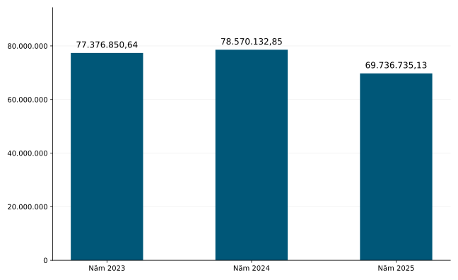
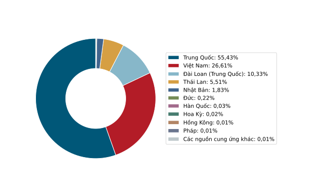
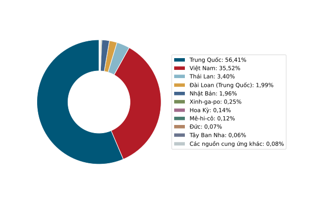
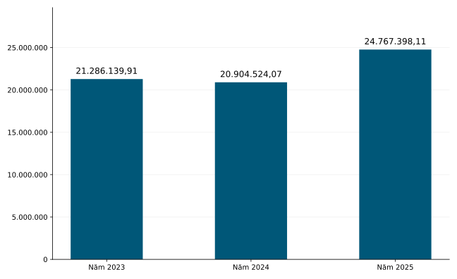
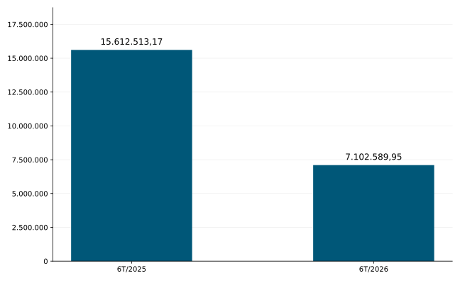

EAEU khởi xướng điều tra tự vệ đối với thép cán phẳng phủ polyme nhập khẩu
Ngày 07 tháng 9 năm 2026, Cục Bảo vệ thị trường nội địa thuộc Ủy ban Kinh tế Á - Âu (EEC) đã khởi xướng điều tra tự vệ đối với thép cán phẳng có phủ polyme nhập khẩu (mã vụ việc SG-15), trên cơ sở Đơn kiện của Công ty cổ phần luyện kim Magnitogorsk, Công ty trách nhiệm hữu hạn luyện kim MMK-Lysvensky và Công ty cổ phần Severstal.
Sản phẩm bị điều tra là thép cán phẳng có nền kim loại dày trên 0,2 mm nhưng không quá 2 mm, chiều rộng trên 50 mm, có phủ polyme, thuộc các mã HS 7210 70 800 0, 7210 90 800 0, 7212 40 800 0 và 7225 99 000 0 theo phân loại hàng hóa của Liên minh Kinh tế Á - Âu (EAEU). Các sản phẩm được loại trừ khỏi phạm vi điều tra gồm thép cán nguội hoặc cán nóng mạ thiếc, tôn thiếc, thép phủ dạng định hình sóng hoặc gân, ngói kim loại, tấm thép định hình và thép tráng men hoặc sơn mài.
Theo nội dung Đơn kiện, lượng nhập khẩu sản phẩm bị điều tra vào EAEU tăng 88% trong năm 2024 so với năm 2023 và dù giảm 15% trong năm 2025, vẫn tăng 60% trong giai đoạn 2023 - 2025. Trong quý I/2026, nhập khẩu tiếp tục tăng 18%. Tỷ trọng nhập khẩu so với sản lượng của ngành sản xuất EAEU tăng 86% trong giai đoạn 2023 - 2025 và 30% trong quý I/2026; tỷ trọng nhập khẩu trong tổng tiêu dùng tăng tương ứng 68% và 31%.
Đơn kiện cho rằng sự gia tăng nhập khẩu diễn ra trong bối cảnh tiêu dùng tại thị trường EAEU giảm 5% trong giai đoạn 2023 - 2025 và giảm 10% trong quý I/2026, đồng thời các chỉ tiêu của ngành sản xuất EAEU suy giảm. Trong giai đoạn 2023 - 2025 và quý I/2026, sản lượng giảm lần lượt 18% và 20%, công suất sử dụng giảm 12% và 23%, doanh số bán hàng giảm 18% và 29%, thị phần giảm 13% và 21%. Theo Đơn kiện, giá nhập khẩu bình quân thấp hơn giá bình quân của sản phẩm do ngành sản xuất EAEU sản xuất và bán trên thị trường nội khối, dẫn đến lợi nhuận từ bán hàng giảm lần lượt 49% và 53%.
Đơn kiện cũng cho rằng các nước xuất khẩu lớn vào EAEU có năng lực sản xuất dư thừa và tiềm năng xuất khẩu đáng kể, trong khi sản phẩm tương tự đang chịu các biện pháp phòng vệ thương mại tại một số thị trường, gồm chống bán phá giá tại Bra-xin và U-crai-na, tự vệ tại Ai Cập, hạn ngạch thuế quan tại Liên minh châu Âu và các mức thuế bổ sung của Hoa Kỳ theo Mục 232 và Mục 301. Trên cơ sở các thông tin, số liệu trong Đơn kiện, EEC cho rằng có đủ cơ sở để khởi xướng điều tra tự vệ theo khoản 206 Nghị định thư về việc áp dụng các biện pháp tự vệ, chống bán phá giá và chống trợ cấp đối với hàng hóa từ các nước thứ ba.
Về thủ tục điều tra, trong thời hạn 60 ngày kể từ ngày khởi xướng, EEC tiếp nhận ý kiến và thông tin bằng văn bản của các bên liên quan bằng tiếng Nga, bao gồm bản mật và bản không mật. Các bên liên quan có nhu cầu tham gia điều tra cần đăng ký để được công nhận là bên tham gia điều tra trong thời hạn 25 ngày kể từ ngày khởi xướng, kèm tài liệu chứng minh tư cách theo quy định. Các bên tham gia điều tra có quyền tiếp cận bản công khai của Đơn kiện và các tài liệu điều tra không mật thông qua Thư viện tài liệu điện tử dành cho các bên tham gia điều tra.
Ngoài ra, các bên tham gia điều tra có quyền yêu cầu tổ chức phiên điều trần công khai trong thời hạn 45 ngày kể từ ngày khởi xướng điều tra. Hướng dẫn về việc chuẩn bị bản công khai của tài liệu được đăng tải tại mục “Bảo vệ thị trường nội địa” trên trang thông tin điện tử chính thức của EAEU.
TIN TRONG NƯỚC
Thông báo gia hạn thời gian nộp bản trả lời câu hỏi điều tra vụ việc AD24
Ngày 27 tháng 7 năm 2026, Bộ trưởng Bộ Công Thương đã ban hành Quyết định số 1903/QĐ-BCT và Thông báo kèm theo về việc điều tra áp dụng biện pháp chống bán phá giá (CBPG) đối với một số sản phẩm thanh thép dự ứng lực có xuất xứ từ Cộng hòa Nhân dân Trung Hoa (mã vụ việc AD24).
Ngày 14 tháng 8 năm 2026, Cục Phòng vệ thương mại (PVTM) ban hành Thông báo số 115/TB-PVTM về việc ban hành Bản câu hỏi điều tra dành cho các nhà sản xuất trong nước và nhà nhập khẩu trong vụ việc AD24. Theo đó, thời hạn trả lời Bản câu hỏi điều tra là trước 17h00 ngày 14 tháng 9 năm 2026.
Trên cơ sở đề nghị của các doanh nghiệp về việc gia hạn thời gian nộp bản trả lời câu hỏi, Cơ quan điều tra quyết định gia hạn thời hạn trả lời Bản câu hỏi điều tra đối với các nhà sản xuất trong nước và nhà nhập khẩu đến trước 17h00 ngày 29 tháng 9 năm 2026 (giờ Hà Nội).
Sau thời hạn nêu trên, Cơ quan điều tra có thể sử dụng các dữ liệu sẵn có theo quy định của pháp luật về phòng vệ thương mại. Các nội dung khác được thực hiện theo hướng dẫn tại Bản câu hỏi điều tra ban hành kèm theo Thông báo số 115/TB-PVTM ngày 14 tháng 8 năm 2026 của Cục Phòng vệ thương mại.
TIN NƯỚC NGOÀI
Thổ Nhĩ Kỳ kiến nghị về việc khởi xướng điều tra chống bán phá giá đối với soda ash nhập khẩu
Bộ Thương mại Thổ Nhĩ Kỳ chính thức bày tỏ quan ngại về việc khởi xướng điều tra chống bán phá giá và áp dụng biện pháp chống bán phá giá tạm thời đối với sản phẩm soda ash nhập khẩu có xuất xứ từ Kê-ni-a và Thổ Nhĩ Kỳ. Theo phía Thổ Nhĩ Kỳ, việc áp dụng các biện pháp này có thể làm hạn chế sự vận hành của các quy luật thị trường trong môi trường cạnh tranh.
Chính phủ Thổ Nhĩ Kỳ đã gửi ý kiến phản hồi về kết luận sơ bộ và quyết định áp dụng thuế chống bán phá giá tạm thời đối với sản phẩm soda ash có xuất xứ từ Kê-ni-a và Thổ Nhĩ Kỳ.
Theo phía Thổ Nhĩ Kỳ, lượng hàng hóa nhập khẩu thuộc phạm vi điều tra khó có khả năng gây tác động tiêu cực đáng kể đến ngành sản xuất trong nước. Ngược lại, việc đa dạng hóa nguồn cung nhập khẩu có thể mang lại một số tác động tích cực, trong đó có việc mở rộng sự lựa chọn cho người tiêu dùng thông qua việc tiếp cận nhiều loại sản phẩm hơn.
Bên cạnh đó, phía Thổ Nhĩ Kỳ cũng cho rằng việc gia tăng cạnh tranh có thể thúc đẩy ngành sản xuất trong nước đổi mới và nâng cao hiệu quả sản xuất, qua đó cải thiện chất lượng sản phẩm và quy trình sản xuất. Đồng thời, việc tiếp cận thị trường quốc tế cũng khuyến khích các nhà sản xuất trong nước tiệm cận các tiêu chuẩn và xu hướng toàn cầu, từ đó nâng cao năng lực cạnh tranh.
Trên cơ sở các lập luận trên, Thổ Nhĩ Kỳ cho rằng việc áp dụng bất kỳ biện pháp chống bán phá giá, dù là tạm thời hay chính thức, đều không phù hợp với lợi ích công cộng và có thể gây ảnh hưởng bất lợi đến ngành sản xuất trong nước trong trung và dài hạn.
Tổng cục Nhập khẩu thuộc Bộ Thương mại Thổ Nhĩ Kỳ bày tỏ kỳ vọng các ý kiến nêu trên sẽ được xem xét và Ủy ban điều tra sẽ tiến hành vụ việc phù hợp với các quy định liên quan của Hiệp định chống bán phá giá của WTO và các án lệ liên quan của WTO. Thổ Nhĩ Kỳ đồng thời bảo lưu các quyền của mình theo các hiệp định liên quan của WTO đối với vụ việc này.
Liên quan đến kết luận và thiệt hại, phía Thổ Nhĩ Kỳ cho rằng Ủy ban đã kết luận, khi chưa có bằng chứng cụ thể, rằng sự suy giảm các chỉ tiêu kinh tế của ngành sản xuất trong nước là do lượng hàng hóa nhập khẩu từ Thổ Nhĩ Kỳ. Theo Thổ Nhĩ Kỳ, đối với phần lớn các chỉ tiêu thiệt hại, Ủy ban chưa đánh giá đầy đủ và khách quan mối quan hệ giữa hàng hóa nhập khẩu thuộc phạm vi điều tra và thiệt hại được cáo buộc.
Đặc biệt, phía Thổ Nhĩ Kỳ cho rằng lượng hàng hóa nhập khẩu từ các nước thuộc phạm vi điều tra ở mức không đáng kể. Đồng thời, trong giai đoạn lượng nhập khẩu tăng, các chỉ tiêu kinh tế của ngành sản xuất trong nước cũng cải thiện. Theo Thổ Nhĩ Kỳ, diễn biến này làm suy yếu mối quan hệ nhân quả giữa hàng nhập khẩu thuộc phạm vi điều tra và thiệt hại được cáo buộc, đồng thời đặt ra vấn đề đối với kết luận của Ủy ban. Do đó, phía Thổ Nhĩ Kỳ cho rằng không có cơ sở để quy kết thiệt hại của ngành sản xuất trong nước cho lượng hàng nhập khẩu từ Thổ Nhĩ Kỳ.
Theo Thổ Nhĩ Kỳ, hầu hết các chỉ tiêu kinh tế của ngành sản xuất trong nước đều cải thiện sau khi lượng nhập khẩu từ các nước thuộc phạm vi điều tra tăng từ 0 lên 3,21 trong Năm 1. Khi lượng nhập khẩu tiếp tục tăng lên 3,75 trong Năm 2, nhiều chỉ tiêu kinh tế của ngành sản xuất trong nước vẫn ở mức tốt hơn so với năm cơ sở. Mặc dù một số chỉ tiêu kinh tế có giảm nhẹ, phía Thổ Nhĩ Kỳ cho rằng không thể hợp lý quy kết những thay đổi này cho hàng hóa bị cáo buộc bán phá giá.
Thay vào đó, Thổ Nhĩ Kỳ cho rằng các bằng chứng cho thấy những biến động nêu trên xuất phát từ sự thu hẹp của tổng cầu trên thị trường nội địa, khi quy mô thị trường giảm 9% trong thời kỳ điều tra. Theo đó, trong trường hợp ngành sản xuất trong nước thực sự chịu thiệt hại, nguyên nhân chủ yếu là sự suy giảm nhu cầu của toàn thị trường thay vì hàng hóa nhập khẩu thuộc phạm vi điều tra.
Hoa Kỳ và Ca-na-đa đổ vỡ đàm phán thương mại, áp dụng mức thuế 50% đối với một số hàng hóa
Sau hơn hai tuần đàm phán thương mại, Hoa Kỳ và Ca-na-đa không đạt được thỏa thuận. Trong bối cảnh chính quyền Tổng thống Donald Trump tiếp tục áp dụng mức thuế 50% đối với một số nhóm hàng hóa nhập khẩu từ Ca-na-đa. Đáp lại, Ca-na-đa tuyên bố sẽ áp dụng các biện pháp thuế quan tương ứng theo nguyên tắc “đô-la đổi đô-la”.
Diễn biến này xảy ra chỉ vài giờ sau khi Tổng thống Donald Trump cho biết các bên “về cơ bản” đã đạt được thỏa thuận, trong khi hai bên vẫn tiếp tục xử lý một số vấn đề phức tạp.
Theo các thông tin được công bố, Hoa Kỳ áp dụng mức thuế 50% đối với một số hàng hóa của Ca-na-đa, nhằm đáp lại điều mà phía Hoa Kỳ cho là các hoạt động thương mại mang tính phân biệt đối xử của Ca-na-đa đối với một số sản phẩm, trong đó có ô tô, đồ uống có cồn và sản phẩm sữa. Các biện pháp thuế quan mới dự kiến áp dụng đối với lượng hàng hóa xuất khẩu từ Ca-na-đa sang Hoa Kỳ trị giá khoảng 28 tỷ USD, tương đương khoảng 5% tổng kim ngạch xuất khẩu của Ca-na-đa sang thị trường Hoa Kỳ trong năm 2025.
Đội ngũ đàm phán thương mại của Tổng thống Trump cho rằng các yêu cầu mới và việc Ca-na-đa thay đổi một số cam kết đó đã làm thay đổi những nội dung mà hai bên đã đạt được trong quá trình đàm phán. Trong khi đó, Thủ tướng Ca-na-đa Mark Carney cho biết các cuộc đàm phán đã bị đình chỉ do đề xuất của Hoa Kỳ chưa đáp ứng các mục tiêu của Ca-na-đa, đồng thời cho rằng chính phía Hoa Kỳ đã đưa ra những thay đổi vào phút cuối.
Liên quan đến các biện pháp thuế quan mới của Hoa Kỳ, Thủ tướng Mark Carney tuyên bố Ca-na-đa sẽ áp dụng các biện pháp tương ứng nhằm bảo vệ người lao động và doanh nghiệp trong nước.
Các vấn đề trọng tâm trong đàm phán bao gồm thuế quan đối với ô tô và các ngành thép, nhôm và gỗ của Ca-na-đa. Trước đó, Hoa Kỳ đã áp dụng mức thuế lên tới 50% đối với một số sản phẩm thuộc các ngành này.
Đối với ô tô và linh kiện ô tô, mức thuế 25% mà Hoa Kỳ áp dụng trước đó được cho là có thể giảm xuống 15% theo dự thảo thỏa thuận. Việc giảm thuế được kỳ vọng sẽ hỗ trợ các doanh nghiệp ô tô có chuỗi sản xuất phụ thuộc vào việc linh kiện được vận chuyển qua lại biên giới Hoa Kỳ–Ca-na-đa nhiều lần trước khi hoàn thiện sản phẩm.
Đối với các sản phẩm thép và nhôm, các bên cũng từng đạt được một số tiến triển trong đàm phán trước khi các cuộc thương lượng kết thúc. Một số đề xuất từng được đưa ra nhằm khôi phục miễn trừ thuế đối với một số sản phẩm thép của Ca-na-đa theo Hiệp định Thương mại Hoa Kỳ–Mê-hi-cô–Ca-na-đa (USMCA), đồng thời giảm mức thuế đối với một số sản phẩm xuống 25%. Tuy nhiên, các mức thuế 50% được Hoa Kỳ áp dụng trước đó hiện vẫn được duy trì.
Trong khi đó, mức thuế đối với thép áp dụng đối với nhiều đối tác thương mại khác của Hoa Kỳ hiện ở mức 25%. Các đề xuất giảm thuế đối với thép, nhôm, ô tô và gỗ của Ca-na-đa cũng đã nhận được một số ý kiến không đồng tình từ các nhà sản xuất kim loại tại Hoa Kỳ.
Hoa Kỳ và Ca-na-đa là những đối tác thương mại quan trọng của nhau. Do đó, việc áp dụng các biện pháp thuế quan mới có thể tác động đáng kể đến hoạt động thương mại song phương. Hoa Kỳ chiếm khoảng 62% tổng kim ngạch thương mại của Ca-na-đa.
Tuy nhiên, việc đàm phán không đạt được thỏa thuận và Hoa Kỳ tiếp tục áp dụng các biện pháp thuế quan mới đã làm gia tăng những bất đồng trong quan hệ thương mại song phương. Ca-na-đa tuyên bố sẽ áp dụng các biện pháp thuế quan tương ứng đối với hàng hóa nhập khẩu từ Hoa Kỳ.
In-đô-nê-xi-a khởi xướng điều tra chống bán phá giá đối với sản phẩm thép mạ kẽm có xuất xứ từ Trung Quốc
Ngày 15/9/2026, Ủy ban Chống bán phá giá In-đô-nê-xi-a (KADI) khởi xướng điều tra chống bán phá giá đối với sản phẩm thép mạ kẽm nhập khẩu có xuất xứ từ Trung Quốc. Các sản phẩm có mã HS: 7210.49.11, 7210.49.17, 7210.49.18, 7210.49.19, 7212.30.12, 7212.30.13, 7212.30.19, 7225.92.90 và 7225.99.90
Theo KADI, cuộc điều tra khởi xướng được thực hiện trên cơ sở đơn yêu cầu của PT Tata Metal Lestari và PT Arcelormittal Nippon Steel Indonesia, đại diện cho ngành sản xuất trong nước của In-đô-nê-xi-a. Trên cơ sở xem các bằng chứng ban đầu, KADI cho rằng lượng nhập khẩu sản phẩm thép mạ kẽm có xuất xứ từ Trung Quốc có xu hướng gia tăng và gây thiệt hại cho ngành sản xuất trong nước.
Theo bà Frida Adiati, Chủ tịch KADI, trong giai đoạn từ ngày 1/1/2023 đến ngày 31/12/2025, tổng lượng nhập khẩu các sản phẩm thép thuộc phạm vi điều tra của In-đô-nê-xi-a từ tất cả các nguồn đạt 2.562.407 tấn. Trong đó, hàng hóa có xuất xứ từ Trung Quốc chiếm khoảng 81% tổng lượng nhập khẩu trong cùng giai đoạn.
KADI cho biết cuộc điều tra sẽ được tiến hành trong thời hạn 12 tháng. Trong quá trình điều tra, cơ quan điều tra sẽ tiếp tục xem xét các yếu tố liên quan đến lượng nhập khẩu, giá nhập khẩu, tình hình hoạt động của ngành sản xuất trong nước và mối quan hệ giữa hàng hóa nhập khẩu thuộc phạm vi điều tra với thiệt hại được cáo buộc.
Hoa Kỳ áp dụng mức thuế cao hơn 249% đối với sản phẩm điện mặt trời nhập khẩu từ Ấn Độ
Hoa Kỳ đã áp dụng các mức thuế mới ở mức cao đối với pin mặt trời và tấm pin mặt trời nhập khẩu từ Ấn Độ, In-đô-nê-xi-a và Lào, trong đó các sản phẩm điện mặt trời của Ấn Độ phải chịu mức thuế chống bán phá giá và thuế chống trợ cấp tổng cộng hơn 120%. Biện pháp này có thể làm gia tăng đáng kể chi phí đối với các nhà sản xuất Ấn Độ muốn cung cấp sản phẩm cho thị trường Hoa Kỳ, đồng thời gây sức ép đối với khả năng cạnh tranh xuất khẩu của các doanh nghiệp này.
Theo Reuters, các mức thuế trên được áp dụng sau khi có cáo buộc cho rằng các doanh nghiệp tại ba quốc gia nêu trên đã bán sản phẩm điện mặt trời vào Hoa Kỳ với giá thấp không công bằng và nhận được trợ cấp của Chính phủ, tạo lợi thế so với các nhà sản xuất Hoa Kỳ. Các mức thuế chính thức được Bộ Thương mại Hoa Kỳ công bố sau khi hoàn tất điều tra đối với hàng hóa nhập khẩu từ các quốc gia này.
Theo kết quả cuối cùng do Bộ Thương mại Hoa Kỳ công bố, sản phẩm điện mặt trời của Ấn Độ chịu mức thuế chống bán phá giá 123,04% và thuế chống trợ cấp 126,09%. Tác động cộng gộp của các mức thuế này có thể khiến pin mặt trời và tấm pin mặt trời của Ấn Độ trở nên đắt hơn đáng kể tại thị trường Hoa Kỳ, qua đó có khả năng ảnh hưởng đến khả năng cạnh tranh về giá của các nhà sản xuất.
Đối với In-đô-nê-xi-a, mức thuế chống bán phá giá là 94,36%, trong khi mức thuế chống trợ cấp dao động từ 73,2% đến 173,7%. Lào chịu mức thuế chống bán phá giá 65,43%, cùng mức thuế chống trợ cấp từ 82,03% đến 153,67%. Như vậy, các biện pháp mới có tác động đáng kể đến các nhà xuất khẩu sản phẩm điện mặt trời của cả ba quốc gia.
Cuộc điều tra được khởi xướng trên cơ sở đề nghị của Liên minh các nhà sản xuất và thương mại điện mặt trời Hoa Kỳ, đại diện cho các nhà sản xuất điện mặt trời lớn của Hoa Kỳ, trong đó có First Solar, Hanwha Qcells và Mission Solar Energy. Liên minh này cho rằng hàng hóa nhập khẩu được trợ cấp và bán phá giá đe dọa các khoản đầu tư và năng lực sản xuất điện mặt trời tại Hoa Kỳ.
Động thái trên diễn ra trong bối cảnh Washington tìm cách hạn chế việc các hoạt động sản xuất điện mặt trời của Trung Quốc chuyển sang các nước thứ ba. Sau khi Hoa Kỳ áp dụng các mức thuế trước đó đối với sản phẩm điện mặt trời của Trung Quốc, các nhà sản xuất đã mở rộng hoạt động sản xuất tại một số thị trường châu Á khác, trong đó có Ấn Độ, In-đô-nê-xi-a và Lào, khiến ba quốc gia này ngày càng trở thành những nguồn cung quan trọng cho thị trường Hoa Kỳ.
Quyết định của Bộ Thương mại Hoa Kỳ chưa phải là bước cuối cùng trong quá trình điều tra. Ủy ban Thương mại Quốc tế Hoa Kỳ (USITC) dự kiến ban hành kết luận cuối cùng về thiệt hại vào ngày 14 tháng 10 năm 2026. Ủy ban sẽ xác định liệu hàng hóa nhập khẩu có gây thiệt hại đáng kể hoặc đe dọa gây thiệt hại cho ngành sản xuất Hoa Kỳ hay không.
Theo Reuters, nếu Ủy ban đưa ra kết luận cuối cùng, các lệnh áp thuế chính thức dự kiến sẽ có hiệu lực vào tháng 11. Đối với các nhà sản xuất điện mặt trời Ấn Độ, các mức thuế này có thể làm tăng đáng kể chi phí cung cấp sản phẩm cho thị trường Hoa Kỳ, đồng thời tạo thêm sức ép đối với khả năng cạnh tranh về xuất khẩu và giá bán.
Vương Quốc Anh gia hạn biện pháp chống bán phá giá đối với mặt hàng thép thanh nhập khẩu từ Trung Quốc
Chính phủ Anh đã quyết định gia hạn biện pháp chống bán phá giá đối với mặt hàng thép thanh nhập khẩu có xuất xứ từ Trung Quốc thêm 5 năm, sau kết quả rà soát cuối kỳ do Cơ quan Phòng vệ Thương mại Anh (TRA) thực hiện.
Ngày 10 tháng 9 năm 2026, Bộ Kinh doanh và Thương mại Vương Quốc Anh đã ban hành Thông báo Phòng vệ Thương mại số 2026/26. Thông báo này có hiệu lực thi hành từ ngày 11 tháng 9 năm 2026, thay thế cho Thông báo Phòng vệ Thương mại số 2022/07 liên quan đến sản phẩm thép thanh có xuất xứ từ Trung Quốc.
Biện pháp chống bán phá giá áp dụng đối với các sản phẩm thanh và que, cán nóng, dạng cuộn không đều, bằng sắt hoặc thép không hợp kim hoặc thép hợp kim khác, không bao gồm thép không gỉ.
Cơ quan Phòng vệ Thương mại Anh (TRA) đã khởi xướng rà soát cuối kỳ biện pháp chống bán phá giá áp dụng đối với sản phẩm thép thanh xuất xứ từ Trung Quốc vào ngày 28 tháng 1 năm 2026. Sau quá trình đánh giá và xem xét các ý kiến đóng góp từ các bên liên quan, TRA khuyến nghị tiếp tục duy trì mức thuế chống bán phá giá hiện hành. Do không có bằng chứng nào được cung cấp để chứng minh cho việc loại bỏ bất kỳ sản phẩm nào khỏi phạm vi áp dụng của biện pháp, mức thuế này sẽ tiếp tục áp dụng đối với toàn bộ các sản phẩm thuộc phạm vi rà soát.
Theo quyết định này, các sản phẩm do Tập đoàn Valin (Valin Group) sản xuất sẽ tiếp tục chịu mức thuế chống bán phá giá là 7,9%. Mức thuế 24% sẽ tiếp tục được áp dụng đối với tất cả các nhà xuất khẩu khác của Trung Quốc.
Để được hưởng mức thuế suất riêng dành cho công ty thuộc Tập đoàn Valin, các nhà nhập khẩu cần xuất trình hóa đơn thương mại hợp lệ cho Cơ quan Hải quân và Thuế vụ Hoàng gia Anh (HMRC) cùng với bản khai báo xuất khẩu theo quy định tại thời điểm nhập khẩu. Nếu không có đủ tài liệu cần thiết, mức thuế 24% sẽ tiếp tục được áp dụng.
Theo thông báo mới, biện pháp chống bán phá giá sẽ tiếp tục áp dụng kể từ ngày 28 tháng 1 năm 2026 và dự kiến hết hiệu lực vào ngày 28 tháng 1 năm 2031. TRA sẽ thông báo cho các bên liên quan trước ngày hết hiệu lực để các bên nộp hồ sơ xin rà soát cuối kỳ mới (nếu có).
Hoa Kỳ áp thuế chống bán phá giá và chống trợ cấp chính thức đối với pin mặt trời nhập khẩu từ Ấn Độ, In-đô-nê-xi-a, Lào và các quốc gia liên quan
Hoa Kỳ đã quyết định áp dụng mức thuế chống bán phá giá và chống trợ cấp ở mức cao đối với các sản phẩm pin mặt trời bằng silicon tinh thể nhập khẩu từ In-đia, In-đô-nê-xi-a và Lào.
Bộ Thương mại Hoa Kỳ đã ban hành kết luận cuối cùng sau quá trình điều tra xem xét liệu các nhà sản xuất và xuất khẩu từ ba quốc gia này có đang bán phá giá pin mặt trời tại thị trường Hoa Kỳ hoặc hưởng lợi từ các khoản trợ cấp của chính phủ hay không.
Đối với các nhà xuất khẩu và nhà sản xuất từ Ấn Độ, Bộ Thương mại xác định biên độ bán phá giá bình quân gia quyền là 123,04%. Tỷ lệ ký quỹ tiền mặt tương ứng, sau khi điều chỉnh các khoản bù đắp trợ cấp, là 107,17%. Biên độ phá giá 123,04% này được xác định dựa trên các dữ liệu sẵn có bất lợi (AFA).
Các công ty nằm trong phạm vi quyết định chống bán phá giá của Ấn Độ bao gồm Mundra Solar PV Ltd., Mundra Solar Energy Limited, Kowa Company Ltd. và Premier Energies Photovoltaic Pvt. Ltd.. Mức biên độ 123,04% cũng áp dụng cho tất cả các nhà xuất khẩu và nhà sản xuất khác thuộc phạm vi quyết định.
Về mặt thuế chống trợ cấp, Bộ Thương mại xác định mức trợ cấp là 126,09% đối với Mundra Solar Energy Limited và Mundra Solar PV Ltd.. Mức thuế này cũng áp dụng cho tất cả các nhà xuất khẩu và nhà sản xuất khác của Ấn Độ nằm trong phạm vi quyết định. Tỷ lệ trợ cấp này cũng dựa trên các dữ liệu sẵn có có bất lợi.
Thị trường Hoa Kỳ đã nổi lên như một điểm đến ngày càng quan trọng đối với các sản phẩm năng lượng mặt trời của Ấn Độ. Lượng nhập khẩu pin mặt trời được điều tra từ Ấn Độ đã tăng vọt từ 232,4 triệu oát năm 2022 lên 2,05 tỷ oát năm 2023, trước khi đạt 2,30 tỷ oát vào năm 2024. Lượng nhập khẩu từ Ấn Độ đã tăng từ 83,9 triệu đô-la năm 2022 lên 760,8 triệu đô-la năm 2023, và tiếp tục tăng lên 792,6 triệu đô-la năm 2024.
Đối với In-đô-nê-xi-a, Bộ Thương mại xác định biên độ bán phá giá bình quân gia quyền là 94,36% đối với PT Blue Sky Solar In-dô-nê-xi-a, PT REC Solar Energy In-đô-nê-xi-a và tất cả các nhà xuất khẩu, nhà sản xuất khác. Cơ quan này cho biết mức thuế dựa trên các dữ liệu sẵn có có bất lợi.
Mức thuế chống trợ cấp cuối cùng đối với PT Blue Sky Solar In-đô-nê-xi-a là 173,70%, trong khi PT REC Solar Energy In-đô-nê-xi-a và tất cả các nhà xuất khẩu, nhà sản xuất khác phải đối mặt với mức thuế trợ cấp là 73,20%.
Đối với Lào, Bộ Thương mại xác định biên độ bán phá giá bình quân gia quyền là 65,43%, với tỷ lệ ký quỹ tiền mặt sau khi bù đắp trợ cấp là 65,03%. Quyết định này bao gồm các doanh nghiệp như Solarspace Technology (Lào) Sole Co., Ltd., Solarspace Technology (Hồng Kông) Limited, Trina Solar Energy Development Pte. Ltd. và Trina Solar Science & Technology (Thái Lan) Company Limited.
Lượng nhập khẩu từ Lào đã tăng vọt một cách đặc biệt. Sau khi ghi nhận không có lượng nhập khẩu nào vào năm 2022, Hoa Kỳ chỉ nhập khẩu 44.629 oát vào năm 2023, trước khi lượng nhập khẩu tăng vọt lên 1,91 tỷ oát vào năm 2024, trị giá khoảng 335,7 triệu đô-la.
Ủy ban Thương mại Quốc tế Hoa Kỳ (ITC) đang tiến hành các cuộc điều tra song song để xác định xem liệu lượng hàng hóa nhập khẩu có gây ra thiệt hại đáng kể cho ngành công nghiệp năng lượng mặt trời của Hoa Kỳ hay không.
Nguyên đơn trong các vụ việc là Alliance for American Solar Manufacturing and Trade, với các thành viên bao gồm Hanwha Q CELLS USA, First Solar và Mission Solar Energy.
Các cuộc điều tra bao gồm các pin mặt trời bằng silicon tinh thể, cho dù đã hoặc chưa được lắp ráp thành các mô-đun. Các vụ việc liên quan đến Ấn Độ mang mã số A-533-942 và C-533-943, các vụ việc liên quan đến In-đô-nê-xi-a mang mã số A-560-846 và C-560-847, và các vụ việc liên quan đến Lào mang mã số A-553-003 và C-553-004.
Hiện tại, Bộ Thương mại Hoa Kỳ đang duy trì 844 lệnh áp thuế chống bán phá giá và chống trợ cấp nhằm hỗ trợ các doanh nghiệp và ngành sản xuất trong nước trước những tác động tiêu cực từ các hành vi thương mại không công bằng.
Cảnh báo đối với mặt hàng sợi polyester có độ bền cao xuất khẩu vào thị trường Ấn Độ
1. Mô tả mặt hàng sợi polyester có độ bền cao
Sợi polyester có độ bền cao (High Tenacity Polyester Yarn) là loại sợi tổng hợp được sản xuất chủ yếu từ polymer polyester, phổ biến nhất là polyethylene terephthalate (PET), có đặc tính cơ lý nổi bật là độ bền kéo cao, khả năng chịu lực và khả năng chống biến dạng tốt hơn so với nhiều loại sợi polyester thông thường. Sản phẩm thường được sản xuất từ nguyên liệu polyester ở dạng polymer hoặc hạt nhựa PET thông qua các công đoạn nấu chảy, kéo sợi, định hướng phân tử, kéo giãn và xử lý nhiệt nhằm tạo ra sợi có cấu trúc phân tử và đặc tính cơ học phù hợp với mục đích sử dụng. Trong quá trình sản xuất, các thông số như thành phần nguyên liệu, tỷ lệ kéo giãn, nhiệt độ xử lý, tốc độ kéo sợi và phương pháp gia công có thể được điều chỉnh để tạo ra các loại sợi có độ bền, độ giãn, độ ổn định kích thước và các đặc tính kỹ thuật khác nhau. Tùy theo công nghệ sản xuất và mục đích sử dụng, sợi polyester có độ bền cao có thể được cung cấp dưới dạng sợi filament liên tục (continuous filament yarn) hoặc các dạng sản phẩm đã qua một số công đoạn gia công, xử lý bổ sung.
Về đặc tính, sợi polyester có độ bền cao có khả năng chịu kéo, chịu mài mòn, chịu tác động cơ học và duy trì độ ổn định kích thước tương đối tốt. Sợi có khả năng chống co ngót, chống nhăn và ít bị ảnh hưởng bởi độ ẩm trong điều kiện sử dụng thông thường; đồng thời có khả năng chống lại nhiều loại hóa chất, dầu và các tác động của môi trường ở mức độ nhất định. Những đặc tính này giúp sợi polyester có độ bền cao phù hợp với các sản phẩm yêu cầu khả năng chịu lực và độ bền sử dụng cao. So với polyester thông thường, điểm khác biệt quan trọng của sợi polyester có độ bền cao nằm ở chỉ tiêu độ bền kéo/độ bền đứt trên đơn vị khối lượng sợi, thường được thể hiện thông qua các thông số kỹ thuật như tenacity, breaking strength, denier hoặc dtex, cùng với các chỉ tiêu về độ giãn dài khi đứt, độ co nhiệt và độ ổn định của sợi. Tuy nhiên, tiêu chí xác định một sản phẩm là “sợi polyester có độ bền cao” có thể khác nhau tùy thuộc vào tiêu chuẩn kỹ thuật, quy định phân loại hàng hóa hoặc phạm vi sản phẩm của từng vụ việc phòng vệ thương mại; do đó, khi xác định phạm vi sản phẩm cần căn cứ đồng thời vào thành phần hóa học, cấu tạo sợi, phương thức sản xuất, đặc tính kỹ thuật và mã số HS của sản phẩm.
Sợi polyester có độ bền cao được sử dụng rộng rãi trong nhiều ngành sản xuất công nghiệp và tiêu dùng. Trong lĩnh vực dệt may, sản phẩm có thể được sử dụng để sản xuất vải kỹ thuật, vải công nghiệp, dây đai, băng tải, dây kéo, chỉ may công nghiệp và các loại vật liệu dệt có yêu cầu cao về độ bền. Trong lĩnh vực lốp xe và sản phẩm cao su, sợi polyester có độ bền cao có thể được sử dụng làm vật liệu gia cường cho lốp xe, dây curoa, ống cao su và các sản phẩm cần khả năng chịu lực, chịu mỏi và duy trì hình dạng trong quá trình vận hành. Ngoài ra, sản phẩm còn được sử dụng trong sản xuất vải địa kỹ thuật, vật liệu xây dựng, vật liệu gia cường, dây thừng, lưới, bạt, vật liệu lọc và nhiều sản phẩm kỹ thuật khác. Nhờ sự kết hợp giữa trọng lượng tương đối thấp, độ bền cao, khả năng chống mài mòn và tính ổn định, sợi polyester có độ bền cao ngày càng được sử dụng trong các ứng dụng thay thế hoặc kết hợp với các loại vật liệu gia cường khác.
Về thương mại, sợi polyester có độ bền cao có thể được xuất khẩu dưới nhiều dạng quy cách, trong đó có các loại sợi khác nhau về độ mảnh, số sợi đơn, độ xoắn, màu sắc, phương thức xử lý bề mặt và mức độ gia công. Sản phẩm có thể được đóng thành cuộn, ống hoặc các dạng bao gói phù hợp với quá trình vận chuyển và sử dụng trong sản xuất. Khi thực hiện thống kê xuất nhập khẩu hoặc đánh giá nguy cơ phòng vệ thương mại, cần lưu ý rằng mã HS có thể bao gồm cả những sản phẩm không hoàn toàn thuộc phạm vi sợi polyester có độ bền cao, do đó không nên sử dụng toàn bộ kim ngạch của một mã HS để kết luận trực tiếp về quy mô thương mại của riêng mặt hàng này. Việc phân tích cần kết hợp dữ liệu mã HS với mô tả hàng hóa, thông số kỹ thuật, dữ liệu doanh nghiệp xuất nhập khẩu và, trong trường hợp cần thiết, thông tin về chủng loại sản phẩm để xác định chính xác phạm vi hàng hóa.
Đối với hoạt động xuất khẩu, doanh nghiệp sản xuất và xuất khẩu sợi polyester có độ bền cao cần đặc biệt quan tâm đến tính nhất quán giữa sản phẩm thực tế, hồ sơ kỹ thuật, chứng từ thương mại và thông tin khai báo hải quan. Các tài liệu như tiêu chuẩn sản phẩm, catalogue, bảng thông số kỹ thuật, hóa đơn thương mại, hợp đồng, phiếu đóng gói, chứng nhận chất lượng, hồ sơ nguyên liệu và hồ sơ sản xuất cần được lưu trữ đầy đủ để có thể chứng minh xuất xứ, đặc tính và quá trình sản xuất của sản phẩm khi cơ quan có thẩm quyền của thị trường nhập khẩu tiến hành kiểm tra. Đặc biệt, trong trường hợp sản phẩm thuộc nhóm hàng có nguy cơ bị điều tra chống bán phá giá, chống trợ cấp hoặc các biện pháp phòng vệ thương mại khác, doanh nghiệp cần chủ động theo dõi biến động xuất khẩu, giá bán, thị phần và tình hình sản xuất của ngành hàng tại các thị trường xuất khẩu chủ yếu. Việc duy trì hệ thống dữ liệu đầy đủ về chi phí nguyên liệu, chi phí sản xuất, giá bán, khách hàng, sản lượng, công suất và doanh thu theo từng thị trường sẽ giúp doanh nghiệp chủ động hơn trong việc giải trình khi phát sinh điều tra phòng vệ thương mại, đồng thời hỗ trợ việc chứng minh tính minh bạch và độc lập trong hoạt động sản xuất, kinh doanh.
Quy trình sản xuất sợi polyester có độ bền cao
Sợi polyester có độ bền cao được sản xuất chủ yếu từ polyethylene terephthalate (PET) thông qua quy trình công nghệ gồm nhiều công đoạn liên hoàn, trong đó các yếu tố về chất lượng nguyên liệu, điều kiện phản ứng, tốc độ kéo sợi, tỷ lệ kéo giãn và xử lý nhiệt có vai trò quyết định đến các đặc tính cơ lý của sản phẩm cuối cùng. So với sợi polyester thông thường, quy trình sản xuất sợi polyester có độ bền cao thường được kiểm soát chặt chẽ hơn nhằm tạo ra cấu trúc phân tử có mức độ định hướng và kết tinh phù hợp, qua đó nâng cao độ bền kéo, khả năng chịu tải, độ ổn định kích thước và khả năng chống biến dạng của sợi. Về cơ bản, quy trình có thể được chia thành các công đoạn chính gồm chuẩn bị nguyên liệu và tạo polymer polyester; sấy và xử lý nguyên liệu; nấu chảy polymer; kéo sợi; làm nguội và định hình sợi; kéo giãn và định hướng phân tử; xử lý nhiệt; hoàn tất bề mặt; cuốn sợi và kiểm tra chất lượng trước khi đóng gói, lưu kho và xuất khẩu.
Thứ nhất, chuẩn bị nguyên liệu và sản xuất polymer polyester. Nguyên liệu chủ yếu để sản xuất sợi polyester là các hợp chất dùng để tạo PET, phổ biến gồm ethylene glycol (EG) và terephthalic acid (PTA) hoặc các nguyên liệu tương đương tùy thuộc công nghệ sản xuất của doanh nghiệp. Các nguyên liệu này được kiểm tra về độ tinh khiết, độ ẩm và các chỉ tiêu kỹ thuật trước khi đưa vào sản xuất. Trong quá trình tổng hợp polymer, PTA và EG được thực hiện phản ứng este hóa hoặc sử dụng các hợp chất trung gian phù hợp, sau đó tiếp tục trải qua quá trình trùng ngưng ở điều kiện nhiệt độ và áp suất được kiểm soát. Quá trình này tạo ra polymer polyester có khối lượng phân tử và độ nhớt nội tại phù hợp với yêu cầu sản xuất sợi. Đối với sợi có độ bền cao, chất lượng và độ ổn định của polymer đầu vào đặc biệt quan trọng vì chúng ảnh hưởng trực tiếp đến khả năng hình thành cấu trúc phân tử và tính chất cơ học của sợi sau quá trình kéo giãn. Trong một số dây chuyền, doanh nghiệp có thể sử dụng hạt PET đã được sản xuất sẵn thay cho việc tổng hợp polymer ngay tại nhà máy kéo sợi.
Thứ hai, sấy và chuẩn bị polymer trước khi kéo sợi. PET có tính hút ẩm và nước có thể gây thủy phân polymer khi được gia nhiệt ở nhiệt độ cao, làm giảm khối lượng phân tử và ảnh hưởng bất lợi đến độ bền của sợi. Vì vậy, hạt PET thường được đưa qua hệ thống sấy để loại bỏ độ ẩm trước khi nấu chảy. Công đoạn này phải được kiểm soát chặt chẽ về nhiệt độ, thời gian lưu và độ ẩm còn lại của nguyên liệu. Sau khi sấy, polymer được vận chuyển đến hệ thống nấu chảy trong điều kiện hạn chế tiếp xúc với môi trường nhằm duy trì chất lượng nguyên liệu. Đối với sản phẩm yêu cầu độ bền cao, việc kiểm soát độ ẩm và tránh suy giảm polymer trong giai đoạn chuẩn bị nguyên liệu có ý nghĩa đặc biệt quan trọng, bởi các khiếm khuyết về cấu trúc polymer có thể ảnh hưởng đến khả năng chịu lực của sợi thành phẩm.
Thứ ba, nấu chảy và lọc polymer. Hạt PET sau khi được sấy được đưa vào máy đùn hoặc hệ thống nấu chảy để chuyển từ trạng thái rắn sang trạng thái nóng chảy. Polymer nóng chảy được duy trì ở nhiệt độ thích hợp và được vận chuyển dưới áp suất ổn định đến hệ thống lọc. Bộ phận lọc có chức năng loại bỏ các tạp chất, hạt chưa nóng chảy hoàn toàn hoặc các thành phần có kích thước lớn có thể gây đứt sợi hoặc tạo khuyết tật trong quá trình kéo sợi. Việc duy trì nhiệt độ và áp suất ổn định của polymer nóng chảy là yếu tố quan trọng nhằm bảo đảm dòng polymer đồng nhất trước khi đi qua cụm phun sợi. Chất lượng của polymer sau quá trình nấu chảy và lọc ảnh hưởng trực tiếp đến độ đồng đều, độ bền và độ ổn định của sợi.
Thứ tư, kéo sợi và tạo thành các filament ban đầu. Polymer nóng chảy sau khi được lọc được đưa tới cụm đầu phun. Đây là bộ phận có nhiều lỗ nhỏ được thiết kế với kích thước và hình dạng nhất định, qua đó polymer nóng chảy được ép ra thành các dòng polymer rất nhỏ tạo thành các xơ sợi liên tục. Số lượng filament, đường kính lỗ phun, tốc độ phun và tốc độ cuốn sợi có thể được điều chỉnh tùy thuộc vào loại sợi cần sản xuất. Ngay sau khi ra khỏi đầu phun, các filament ở trạng thái nóng và tương đối mềm nên cần được làm nguội có kiểm soát để chuyển sang trạng thái rắn và ổn định cấu trúc. Trong công đoạn này, điều kiện làm nguội, tốc độ dòng khí và môi trường xung quanh cần được kiểm soát nhằm hạn chế sự không đồng đều giữa các xơ sợi.
Thứ năm, làm nguội, định hình và gom xơ sợi. Sau khi được phun ra từ spinneret, các filament được làm nguội bằng dòng khí hoặc phương pháp làm nguội phù hợp để đông đặc. Các xơ sợi sau đó được tập hợp thành bó sợi và có thể được xử lý bằng chất hoàn tất bề mặt nhằm giảm ma sát, hạn chế tích điện và hỗ trợ quá trình kéo giãn, cuốn sợi ở các công đoạn tiếp theo. Chất hoàn tất cũng giúp cải thiện khả năng xử lý sợi trong các công đoạn gia công sau này. Việc kiểm soát đồng đều quá trình làm nguội và lượng chất hoàn tất có ý nghĩa đối với độ đồng đều của sợi, hạn chế hiện tượng xơ sợi bị đứt hoặc hình thành các khuyết tật trên bề mặt.
Thứ sáu, kéo giãn và định hướng phân tử – công đoạn quan trọng quyết định độ bền của sợi. Đây là một trong những công đoạn quan trọng nhất trong sản xuất sợi polyester có độ bền cao. Các sợi polyester ban đầu có cấu trúc phân tử chưa được định hướng đầy đủ. Dưới tác động của lực kéo và điều kiện nhiệt độ thích hợp, sợi được kéo giãn với một tỷ lệ kéo nhất định, làm cho các chuỗi polymer định hướng theo chiều dọc của sợi và đồng thời làm thay đổi mức độ kết tinh của vật liệu. Quá trình này giúp tăng đáng kể độ bền kéo và khả năng chịu tải của sợi. Tỷ lệ kéo giãn, tốc độ kéo, nhiệt độ của các con lăn hoặc bộ phận gia nhiệt và thời gian lưu là những thông số công nghệ quan trọng. Nếu các thông số không được kiểm soát phù hợp, sợi có thể có độ bền không đồng đều, độ giãn quá cao hoặc quá thấp, thậm chí xảy ra đứt sợi trong quá trình sản xuất. Đối với sợi polyester có độ bền cao, doanh nghiệp thường tối ưu hóa điều kiện kéo giãn để đạt sự cân bằng giữa độ bền kéo, độ giãn dài, độ ổn định kích thước và độ co nhiệt theo yêu cầu của từng ứng dụng.
Thứ bảy, xử lý nhiệt và ổn định cấu trúc sợi. Sau quá trình kéo giãn, sợi có thể được đưa qua các công đoạn gia nhiệt và ổn định nhiệt nhằm kiểm soát cấu trúc phân tử, mức độ kết tinh và độ co của sợi. Xử lý nhiệt giúp giảm ứng suất dư hình thành trong quá trình kéo giãn, đồng thời cải thiện độ ổn định kích thước của sản phẩm khi sợi được sử dụng ở điều kiện nhiệt độ hoặc chịu tải trong thời gian dài. Đối với các loại sợi dùng trong lốp xe, dây đai, vải kỹ thuật hoặc vật liệu gia cường, khả năng duy trì tính chất cơ học và kích thước trong điều kiện sử dụng thực tế là một yêu cầu quan trọng. Do đó, điều kiện xử lý nhiệt được lựa chọn phù hợp với loại polymer, thông số kéo giãn và yêu cầu kỹ thuật của sản phẩm cuối cùng.
Thứ tám, hoàn tất bề mặt và xử lý sợi. Sau khi kéo giãn và xử lý nhiệt, sợi có thể được thực hiện thêm một số công đoạn hoàn tất tùy thuộc vào mục đích sử dụng, chẳng hạn như điều chỉnh lượng dầu hoàn tất, xử lý chống tĩnh điện, tăng khả năng bám dính hoặc cải thiện đặc tính ma sát của sợi. Đối với sợi polyester có độ bền cao sử dụng để gia cường cao su hoặc sản xuất các sản phẩm kỹ thuật, bề mặt sợi có thể được xử lý theo yêu cầu nhằm tăng khả năng tương tác hoặc bám dính với vật liệu nền. Việc xử lý bề mặt không chỉ nhằm cải thiện khả năng gia công mà còn góp phần bảo đảm sợi hoạt động ổn định trong sản phẩm cuối cùng.
Thứ chín, cuốn sợi và tạo quy cách sản phẩm. Sợi sau khi hoàn tất được đưa qua hệ thống cuốn để tạo thành các cuộn hoặc ống sợi có kích thước và trọng lượng phù hợp. Tốc độ cuốn phải được kiểm soát để bảo đảm sợi được phân bố đồng đều, không bị chồng chéo hoặc phát sinh sức căng bất thường. Tùy theo yêu cầu của khách hàng, sản phẩm có thể được cung cấp dưới dạng sợi đơn, sợi nhiều hoặc các dạng đã được gia công bổ sung như sợi xoắn, sợi biến tính hoặc sợi có xử lý đặc biệt. Bao bì sản phẩm thường phải bảo vệ sợi khỏi bụi, hơi ẩm, tác động cơ học và các yếu tố môi trường trong quá trình lưu kho và vận chuyển.
Cuối cùng, kiểm tra chất lượng và đóng gói sản phẩm. Trước khi xuất xưởng, sợi polyester có độ bền cao được kiểm tra các chỉ tiêu kỹ thuật phù hợp với tiêu chuẩn sản phẩm và yêu cầu của khách hàng. Các chỉ tiêu thường được quan tâm gồm độ bền kéo/tenacity, độ giãn dài khi đứt, độ mảnh (denier hoặc dtex), độ đồng đều, độ co nhiệt, độ ổn định kích thước, khối lượng, tính chất bề mặt và mức độ khuyết tật của sợi. Đối với những ứng dụng đặc thù, doanh nghiệp có thể kiểm tra thêm các chỉ tiêu liên quan đến khả năng chịu mỏi, khả năng chịu nhiệt hoặc khả năng bám dính với vật liệu khác. Các lô sản phẩm đạt yêu cầu được phân loại, dán nhãn, ghi nhận thông tin về mã sản phẩm, số lô, quy cách và thông số kỹ thuật trước khi đóng gói và đưa vào kho hoặc vận chuyển đến khách hàng.
Thị trường sợi polyester có độ bền cao của Ấn Độ và xu hướng
Ấn Độ là một trong những thị trường dệt may lớn trên thế giới, đồng thời có ngành công nghiệp sản xuất sợi polyester phát triển và nhu cầu ngày càng đa dạng đối với các loại sợi có đặc tính kỹ thuật cao. Trong đó, sợi polyester có độ bền cao là nguyên liệu được sử dụng trong nhiều lĩnh vực như sản xuất lốp xe, dây đai, băng tải, dây thừng, vải kỹ thuật, vật liệu gia cường, vải địa kỹ thuật, sản phẩm cao su và nhiều sản phẩm công nghiệp khác. Nhu cầu đối với mặt hàng này tại Ấn Độ chịu tác động của sự phát triển của ngành dệt may, công nghiệp ô tô, sản xuất lốp xe, xây dựng, phát triển cơ sở hạ tầng và xu hướng mở rộng các loại vật liệu dệt phục vụ mục đích kỹ thuật. Với năng lực sản xuất polyester tương đối lớn, Ấn Độ vừa là quốc gia sản xuất, vừa là thị trường nhập khẩu sợi polyester có độ bền cao, đặc biệt đối với những chủng loại có yêu cầu kỹ thuật hoặc quy cách mà nguồn cung trong nước chưa đáp ứng đầy đủ.
Theo số liệu thương mại quốc tế, năm 2024, Ấn Độ nhập khẩu khoảng 48,9 triệu kg sợi polyester có độ bền cao thuộc mã số HS 540220, với tổng trị giá khoảng 77,2 triệu USD. Quy mô nhập khẩu này cho thấy Ấn Độ là một trong những thị trường có nhu cầu đáng kể đối với mặt hàng sợi polyester có độ bền cao trên thế giới. Về nguồn cung, Trung Quốc là một trong những nhà cung cấp lớn nhất cho thị trường Ấn Độ. Trong năm 2024, Ấn Độ nhập khẩu từ Trung Quốc khoảng 29,47 triệu kg, trị giá khoảng 42,76 triệu USD. Ngoài Trung Quốc, Ấn Độ còn nhập khẩu mặt hàng này từ nhiều nguồn cung khác như Thái Lan, Nhật Bản, Hàn Quốc, Hoa Kỳ, các nước thuộc Liên minh châu Âu và một số quốc gia, vùng lãnh thổ khác. Sự tham gia của nhiều nguồn cung cho thấy thị trường Ấn Độ có mức độ cạnh tranh tương đối cao, đồng thời tạo điều kiện cho các doanh nghiệp nhập khẩu lựa chọn nhà cung cấp dựa trên giá cả, chất lượng, quy cách sản phẩm, khả năng giao hàng và yêu cầu kỹ thuật.
Việt Nam cũng đã có sự hiện diện đáng kể trên thị trường Ấn Độ đối với mặt hàng sợi polyester có độ bền cao. Tuy nhiên, doanh nghiệp Việt Nam phải cạnh tranh với các nhà cung cấp lớn trong khu vực, đặc biệt là Trung Quốc và một số quốc gia châu Á có ngành sản xuất sợi polyester phát triển. Do đó, khả năng duy trì và mở rộng thị phần tại Ấn Độ phụ thuộc không chỉ vào giá bán mà còn vào chất lượng sản phẩm, tính ổn định của nguồn cung, khả năng đáp ứng các yêu cầu kỹ thuật, thời gian giao hàng và mức độ đa dạng hóa sản phẩm của doanh nghiệp.
Về xu hướng nhu cầu, sự phát triển của ngành công nghiệp vật liệu dệt phục vụ các mục đích kỹ thuật đang trở thành một trong những yếu tố quan trọng thúc đẩy nhu cầu đối với sợi polyester có độ bền cao tại Ấn Độ. Khác với các loại sợi polyester sử dụng chủ yếu trong may mặc thông thường, sợi polyester có độ bền cao được sử dụng trong những sản phẩm yêu cầu khả năng chịu lực, chịu mài mòn, duy trì độ ổn định kích thước và hoạt động trong điều kiện sử dụng tương đối khắc nghiệt. Vì vậy, nhu cầu đối với mặt hàng này có mối liên hệ chặt chẽ với sự phát triển của ngành sản xuất ô tô, lốp xe, cao su kỹ thuật, xây dựng, giao thông, nông nghiệp và các sản phẩm công nghiệp. Khi hoạt động đầu tư cơ sở hạ tầng, sản xuất phương tiện giao thông và xây dựng tại Ấn Độ tiếp tục được mở rộng, nhu cầu đối với các loại vật liệu có độ bền cao, trọng lượng tương đối thấp và khả năng đáp ứng yêu cầu kỹ thuật cũng có xu hướng gia tăng, qua đó tạo thêm dư địa cho thị trường sợi polyester có độ bền cao.
Một xu hướng khác của thị trường Ấn Độ là sự gia tăng cạnh tranh giữa các nguồn cung và yêu cầu ngày càng cao về chất lượng sản phẩm. Do có nhiều nhà sản xuất và xuất khẩu trong khu vực châu Á, giá cả có thể chịu tác động đáng kể từ biến động giá nguyên liệu sản xuất polyester, chi phí năng lượng, chi phí vận tải và tình trạng cung cầu trên thị trường thế giới. Đặc biệt, biến động giá các nguyên liệu đầu vào chủ yếu như axit terephthalic tinh khiết và ethylene glycol có thể ảnh hưởng trực tiếp đến chi phí sản xuất và giá bán sợi polyester. Trong bối cảnh đó, các doanh nghiệp xuất khẩu vào Ấn Độ không chỉ phải duy trì mức giá cạnh tranh mà còn cần nâng cao chất lượng, ổn định thông số kỹ thuật và đa dạng hóa sản phẩm nhằm đáp ứng các nhu cầu khác nhau của khách hàng. Đây cũng là yếu tố có thể thúc đẩy các doanh nghiệp chuyển từ cạnh tranh chủ yếu về giá sang cạnh tranh dựa trên chất lượng, đặc tính kỹ thuật và khả năng cung cấp ổn định.
Bên cạnh đó, thị trường Ấn Độ đang xuất hiện xu hướng quan tâm nhiều hơn đến việc sử dụng nguyên liệu tái chế, tiết kiệm năng lượng và giảm tác động đến môi trường trong quá trình sản xuất sợi. Điều này có thể thúc đẩy sự phát triển của các sản phẩm sợi polyester được sản xuất từ nguyên liệu tái chế hoặc có quy trình sản xuất đáp ứng các yêu cầu cao hơn về môi trường. Xu hướng này có thể tạo ra sự phân hóa giữa các loại sợi polyester có nguồn nguyên liệu và quy trình sản xuất khác nhau, đồng thời đặt ra yêu cầu đối với doanh nghiệp xuất khẩu trong việc nâng cao khả năng truy xuất nguồn gốc nguyên liệu, chứng minh quá trình sản xuất và đáp ứng các tiêu chuẩn môi trường của khách hàng. Trong dài hạn, những doanh nghiệp có khả năng cung cấp sản phẩm ổn định, đáp ứng yêu cầu kỹ thuật và đồng thời bảo đảm các yêu cầu về môi trường có thể có điều kiện thuận lợi hơn để tiếp cận các phân khúc khách hàng có yêu cầu cao.
Đối với Việt Nam, thị trường Ấn Độ vừa tạo ra cơ hội mở rộng xuất khẩu, vừa đặt ra những yêu cầu về quản trị rủi ro thương mại. Doanh nghiệp xuất khẩu sợi polyester có độ bền cao cần thường xuyên theo dõi diễn biến nhập khẩu của Ấn Độ, sự thay đổi về thị phần của các nguồn cung, giá nhập khẩu bình quân, tình hình sản xuất của ngành trong nước Ấn Độ và những thay đổi về chính sách quản lý nhập khẩu. Đặc biệt, cần lưu ý rằng Ấn Độ đã áp dụng các biện pháp phòng vệ thương mại đối với một số sản phẩm sợi polyester và các sản phẩm dệt may liên quan trong những thời kỳ khác nhau. Việc cơ quan chức năng Ấn Độ tăng cường theo dõi các sản phẩm polyester có thể làm gia tăng yêu cầu về minh bạch thông tin đối với doanh nghiệp xuất khẩu. Do đó, doanh nghiệp Việt Nam cần chủ động lưu giữ đầy đủ hồ sơ về nguyên liệu đầu vào, quá trình sản xuất, chi phí sản xuất, giá bán, khách hàng, sản lượng, doanh thu và các giao dịch xuất khẩu để có thể giải trình khi cơ quan có thẩm quyền tiến hành điều tra hoặc yêu cầu cung cấp thông tin.
Nhìn chung, thị trường sợi polyester có độ bền cao của Ấn Độ có quy mô tương đối lớn và gắn với nhu cầu phát triển của ngành dệt may, công nghiệp ô tô, sản xuất lốp xe, sản phẩm cao su, xây dựng và các ngành sử dụng vật liệu kỹ thuật. Quy mô nhập khẩu đáng kể cùng sự tham gia của nhiều nguồn cung quốc tế cho thấy thị trường vẫn có dư địa đối với các doanh nghiệp xuất khẩu, trong đó có doanh nghiệp Việt Nam. Tuy nhiên, thị trường cũng đang có sự cạnh tranh cao về giá và chất lượng, trong khi các yêu cầu về đặc tính kỹ thuật, tính ổn định của sản phẩm, khả năng truy xuất nguồn gốc và yếu tố môi trường ngày càng được chú trọng. Trong thời gian tới, nhu cầu sợi polyester có độ bền cao tại Ấn Độ được dự báo tiếp tục gắn với sự phát triển của các ngành công nghiệp sử dụng vật liệu gia cường và vật liệu dệt kỹ thuật. Đối với doanh nghiệp Việt Nam, việc duy trì chất lượng ổn định, đa dạng hóa sản phẩm và khách hàng, theo dõi chặt chẽ diễn biến thương mại của thị trường Ấn Độ, đồng thời chủ động chuẩn bị hồ sơ về sản xuất và xuất khẩu sẽ góp phần nâng cao khả năng duy trì thị trường và hạn chế rủi ro phát sinh các vụ việc phòng vệ thương mại trong thời gian tới.
2. Tình hình xuất khẩu sợi polyester có độ bền cao từ các nguồn trên thế giới sang thị trường Ấn Độ
Năm 2023, tổng kim ngạch xuất khẩu sợi polyester có độ bền cao từ tất cả các nguồn trên thế giới sang Ấn Độ đạt 77,4 triệu USD, trong đó Trung Quốc là nhà cung cấp lớn nhất, tiếp theo là các thị trường như Việt Nam, Thái Lan, Nhật Bản và Đài Loan (Trung Quốc). Trong năm 2024, kim ngạch xuất khẩu mặt hàng này sang Ấn Độ tăng nhẹ 1,5% so với năm 2023 đạt 78,6 triệu USD. Tuy nhiên, năm 2025, kim ngạch xuất khẩu sang Ấn Độ lại có sự sụt giảm 11,2%, đạt 69,7 triệu USD.
Nhìn chung, giai đoạn 2023-2025, thị trường Ấn Độ được đánh giá là một thị trường có quy mô nhập khẩu đáng kể đối với sợi polyester có độ bền cao. Mặc dù lượng nhập khẩu có xu hướng giảm nhẹ trong năm 2024, trị giá nhập khẩu gần như ổn định, cho thấy nhu cầu của thị trường vẫn được duy trì. Cơ cấu nguồn cung tương đối tập trung, trong đó Trung Quốc giữ vị trí chủ đạo và Việt Nam là một trong những nguồn cung lớn tiếp theo; ngoài ra còn có sự tham gia của Thái Lan, Nhật Bản, Hàn Quốc, khu vực châu Á khác và một số nước châu Âu. Đối với Việt Nam, thị trường Ấn Độ có ý nghĩa đáng chú ý do Việt Nam đã hình thành được lượng xuất khẩu tương đối lớn và duy trì vị trí quan trọng trong cơ cấu nguồn cung của Ấn Độ. Tuy nhiên, mức độ tập trung nguồn cung cao cũng đồng nghĩa với mức độ cạnh tranh lớn giữa các nhà xuất khẩu, đặc biệt về giá và thị phần. Trong trường hợp lượng xuất khẩu từ một nguồn tăng nhanh trong thời gian ngắn, giá xuất khẩu giảm đáng kể hoặc thị phần thay đổi mạnh, những diễn biến này có thể thu hút sự quan tâm của cơ quan quản lý và ngành sản xuất trong nước của Ấn Độ. Do đó, các doanh nghiệp Việt Nam xuất khẩu sợi polyester có độ bền cao sang Ấn Độ cần thường xuyên theo dõi lượng và trị giá xuất khẩu, giá xuất khẩu bình quân, sự thay đổi thị phần của Việt Nam so với các nguồn cung khác, đồng thời duy trì đầy đủ hồ sơ về nguyên liệu, quá trình sản xuất, chi phí, giá bán, khách hàng, hợp đồng, hóa đơn và chứng từ xuất xứ để sẵn sàng giải trình khi có yêu cầu từ cơ quan có thẩm quyền.
Tổng giá trị nhập khẩu sợi polyester có độ bền cao của Ấn Độ từ 2023 đến 2025
Đơn vị: USD

Nguồn: S&P Global
Năm 2024, Trung Quốc là nguồn cung cấp có trị giá xuất khẩu sợi polyester có độ bền cao lớn nhất sang thị trường Ấn Độ, đạt 43,6 triệu USD, chiếm 55,4% tổng kim ngạch nhập khẩu sản phẩm cùng loại của Ấn Độ. Việt Nam xếp thứ hai với trị giá xuất khẩu đạt 20,9 triệu USD, chiếm 26,6% tổng kim ngạch nhập khẩu sản phẩm cùng loại của Ấn Độ. Đài Loan (Trung Quốc) xếp thứ ba với trị giá xuất khẩu đạt 8,1 triệu USD, chiếm 10,3% tổng kim ngạch nhập khẩu sản phẩm cùng loại của Ấn Độ. Thái Lan xếp thứ tư với trị giá xuất khẩu đạt 4,3 triệu USD, chiếm 5,5% tổng kim ngạch nhập khẩu sản phẩm cùng loại của Ấn Độ. Nhật Bản xếp thứ năm với trị giá xuất khẩu đạt 1,4 triệu USD, chiếm 1,8% tổng kim ngạch nhập khẩu sản phẩm cùng loại của Ấn Độ. Đức, Hàn Quốc và Hoa Kỳ lần lượt xếp thứ sáu, thứ bảy và thứ tám với trị giá xuất khẩu đạt 175,9 nghìn USD, 22,7 nghìn USD và 18,8 nghìn USD. Tổng trị giá xuất khẩu sợi polyester có độ bền cao của mười nguồn cung ứng chính sang thị trường Ấn Độ đạt 78,6 triệu USD, chiếm 99,99% tổng kim ngạch nhập khẩu sản phẩm cùng loại của Ấn Độ. Tổng trị giá xuất khẩu sợi polyester có độ bền cao của các nguồn cung ứng khác đạt gần 6,3 nghìn USD, chiếm 0,01% tổng kim ngạch nhập khẩu sản phẩm cùng loại của Ấn Độ.
Năm 2025, Trung Quốc tiếp tục là nguồn cung cấp có trị giá xuất khẩu sợi polyester có độ bền cao lớn nhất sang thị trường Ấn Độ, đạt 39,3 triệu USD, chiếm 56,4% tổng kim ngạch nhập khẩu sản phẩm cùng loại của Ấn Độ. Việt Nam xếp thứ hai với trị giá xuất khẩu đạt 24,8 triệu USD, chiếm 35,5% tổng kim ngạch nhập khẩu sản phẩm cùng loại của Ấn Độ. Thái Lan xếp thứ ba với trị giá xuất khẩu đạt 2,4 triệu USD, chiếm 3,4% tổng kim ngạch nhập khẩu sản phẩm cùng loại của Ấn Độ. Đài Loan (Trung Quốc) xếp thứ tư với trị giá xuất khẩu đạt 1,4 triệu USD, chiếm 2,0% tổng kim ngạch nhập khẩu sản phẩm cùng loại của Ấn Độ. Nhật Bản xếp thứ năm với trị giá xuất khẩu đạt 1,4 triệu USD, chiếm 2,0% tổng kim ngạch nhập khẩu sản phẩm cùng loại của Ấn Độ. Xinh-ga-po, Hoa Kỳ và Mê-hi-cô lần lượt xếp thứ sáu, thứ bảy và thứ tám với trị giá xuất khẩu đạt 174,5 nghìn USD, 100,3 nghìn USD và 85 nghìn USD. Tổng trị giá xuất khẩu sợi polyester có độ bền cao của mười nguồn cung ứng sang thị trường Ấn Độ đạt 69,7 triệu USD, chiếm 99,9% tổng kim ngạch nhập khẩu sản phẩm cùng loại của Ấn Độ. Tổng trị giá xuất khẩu sợi polyester có độ bền cao của các nguồn cung ứng khác đạt 57,3 nghìn USD, chiếm 0,1% tổng kim ngạch nhập khẩu sản phẩm cùng loại của Ấn Độ.
Các nguồn cung ứng chính sang thị trường Ấn Độ năm 2024 và 2025
Đơn vị: USD
Nguồn cung ứng vào Ấn Độ
Trị giá NK năm 2024
Trị giá NK năm 2025
2025 so với 2024
Tỷ trọng năm 2024
Tỷ trọng năm 2025
Trung Quốc
43.551.977
39.335.958
-9,7%
55,4%
56,4%
Việt Nam
20.904.524
24.767.398
18,5%
26,6%
35,5%
Thái Lan
4.328.251
2.371.188
-45,2%
5,5%
3,4%
Đài Loan (Trung Quốc)
8.116.210
1.389.380
-82,9%
10,3%
2,0%
Nhật Bản
1.434.191
1.364.104
-4,9%
1,8%
2,0%
Xinh-ga-po
174.468
N/A
0,0%
0,3%
Hoa Kỳ
18.803
100.331
433,6%
0,0%
0,1%
Mê-hi-cô
85.013
N/A
0,0%
0,1%
Đức
175.908
47.712
-72,9%
0,2%
0,1%
Tây Ban Nha
43.884
N/A
0,0%
0,1%
Nguồn: S&P Global
Trong 6 tháng đầu năm 2026, tổng kim ngạch nhập khẩu sợi polyester có độ bền cao của Ấn Độ giảm 11,4% so với cùng kỳ năm trước đó, đạt 33,9 triệu USD. Trung Quốc là nguồn cung cấp sợi polyester có độ bền cao lớn nhất sang thị trường Ấn Độ, đạt 23,4 triệu USD, chiếm 69,1% tổng kim ngạch nhập khẩu sản phẩm cùng loại của Ấn Độ. Việt Nam xếp thứ hai trong số các nguồn cung ứng lớn sợi polyester có độ bền cao sang thị trường Ấn Độ với kim ngạch xuất khẩu đạt 7,1 triệu USD, chiếm 20,9% tổng kim ngạch nhập khẩu sản phẩm cùng loại của Ấn Độ. Thái Lan xếp thứ ba trong số các nguồn cung ứng lớn sợi polyester có độ bền cao sang thị trường Ấn Độ với kim ngạch xuất khẩu đạt 1,4 triệu USD, chiếm 4,1% tổng kim ngạch nhập khẩu sản phẩm cùng loại của Ấn Độ. Đài Loan (Trung Quốc) xếp thứ tư trong số các nguồn cung ứng lớn sợi polyester có độ bền cao sang thị trường Ấn Độ với kim ngạch xuất khẩu đạt 725,1 nghìn USD, chiếm 2,1% tổng kim ngạch nhập khẩu sản phẩm cùng loại của Ấn Độ. Nhật Bản xếp thứ năm trong số các nguồn cung ứng lớn sợi polyester có độ bền cao sang thị trường Ấn Độ với kim ngạch xuất khẩu đạt 691,3 nghìn USD, chiếm 2,0% tổng kim ngạch nhập khẩu sản phẩm cùng loại của Ấn Độ. Hoa Kỳ, Xinh-ga-po và Đức lần lượt xếp thứ sáu, thứ bảy và thứ tám với trị giá xuất khẩu đạt 251,7 nghìn USD, 229,7 nghìn USD và 33,5 nghìn USD.
Các nguồn cung ứng chính sang thị trường Ấn Độ trong 6 tháng đầu năm 2025 và 2026
Đơn vị: USD
Nguồn cung ứng vào Ấn Độ
Trị giá NK 6 tháng/2025
Trị giá NK 6 tháng/2026
6T/2026 so với 6T/2025
Tỷ trọng 2026
Trung Quốc
19.654.187
23.449.003
19,3%
69,1%
Việt Nam
15.612.513
7.102.590
-54,5%
20,9%
Thái Lan
1.660.528
1.390.892
-16,2%
4,1%
Đài Loan (Trung Quốc)
833.899
725.075
-13,0%
2,1%
Nhật Bản
370.009
691.256
86,8%
2,0%
Hoa Kỳ
6.227
251.707
3942,4%
0,7%
Xinh-ga-po
51.040
229.678
350,0%
0,7%
Đức
24.214
33.458
38,2%
0,1%
Vương quốc Anh
21.780
N/A
0,1%
Thổ Nhĩ Kỳ
11.772
N/A
0,0%
Nguồn: S&P Global
Tỷ trọng các nguồn cung ứng chính xuất khẩu sang Ấn Độ năm 2024

Nguồn: S&P Global
Tỷ trọng các nguồn cung ứng chính xuất khẩu sang Ấn Độ năm 2025

Nguồn: S&P Global
3. Tình hình xuất khẩu sợi polyester có độ bền cao của Việt Nam sang thị trường Ấn Độ
Năm 2023, trị giá xuất khẩu mặt hàng sợi polyester có độ bền cao của Việt Nam đạt 21,3 triệu USD, chiếm 27,5% tổng kim ngạch nhập khẩu mặt hàng sợi polyester có độ bền cao của Ấn Độ. Năm 2024, trị giá xuất khẩu mặt hàng này của Việt Nam giảm nhẹ 1,8%, đạt 20,9 triệu USD, chiếm 26,6% tổng kim ngạch nhập khẩu mặt hàng cùng loại của Ấn Độ. Năm 2025, tổng kim ngạch xuất khẩu mặt hàng sợi polyester có độ bền cao của Việt Nam có sự gia tăng 18,5% so với năm trước đó, đạt 24,8 triệu USD, chiếm 35,5% tổng kim ngạch nhập khẩu mặt hàng này của Ấn Độ. Trong giai đoạn 2023-2025, Việt Nam xếp thứ hai trong số các nguồn cung cấp sợi polyester có độ bền cao sang thị trường Ấn Độ.
Tổng trị giá xuất khẩu sợi polyester có độ bền cao của Việt Nam sang Ấn Độ từ năm 2023 đến 2025
Đơn vị: USD

Nguồn: S&P Global
Trong 6 tháng đầu năm 2025, trị giá xuất khẩu sợi polyester có độ bền cao của Việt Nam sang thị trường Ấn Độ đạt 15,6 triệu USD, chiếm 40,8% tổng kim ngạch nhập khẩu sản phẩm cùng loại của Ấn Độ, Việt Nam xếp thứ hai trong số các nguồn cung cấp sợi polyester có độ bền cao sang thị trường Ấn Độ. Trong 6 tháng đầu năm 2026, trị giá xuất khẩu sợi polyester có độ bền cao của Việt Nam giảm 54,5% so với cùng kỳ năm trước, đạt 7,1 triệu USD, chiếm 20,9% tổng kim ngạch nhập khẩu sản phẩm cùng loại của Ấn Độ, Việt Nam vẫn xếp thứ hai trong số các nguồn cung cấp sợi polyester có độ bền cao sang thị trường Ấn Độ.
Trị giá xuất khẩu sợi polyester có độ bền cao của Việt Nam sang Ấn Độ trong 6 tháng đầu năm 2025 và 2026
Đơn vị: USD

Nguồn: S&P Global
4. Cảnh báo và khuyến nghị
Ấn Độ đã áp dụng thuế chống bán phá giá đối với sợi polyester có độ bền cao nhập khẩu từ Trung Quốc từ năm 2017 và tiếp tục khởi xướng điều tra chống lẩn tránh thuế vào năm 2022.
Với tốc độ tăng trưởng nhanh và có một tỷ trọng lớn, các doanh nghiệp xuất khẩu cần lưu ý khả năng Ấn Độ khởi xướng điều tra chống bán phá giá đối với mặt hàng này của Việt Nam.
Do vậy, doanh nghiệp cần xây dựng hồ sơ kỹ thuật riêng cho từng loại sản phẩm, trong đó thể hiện rõ độ mảnh, độ bền kéo, độ giãn dài, cấu trúc sợi, phương pháp xử lý, mục đích sử dụng và các đặc tính kỹ thuật khác. Việc này không chỉ giúp doanh nghiệp xác định chính xác sản phẩm của mình có thuộc phạm vi của một vụ việc hay không mà còn giúp hạn chế rủi ro khi khai báo hải quan, ký hợp đồng và cung cấp thông tin cho cơ quan điều tra.
Bên cạnh đó, doanh nghiệp cần chủ động xây dựng cơ chế cảnh báo sớm đối với thị trường Ấn Độ, trong đó định kỳ cập nhật thông tin về các vụ việc phòng vệ thương mại mới, các cuộc rà soát, điều tra chống lẩn tránh và những thay đổi trong chính sách thương mại của Ấn Độ đối với ngành hóa chất, nhựa, sợi và dệt may. Đặc biệt, doanh nghiệp không nên chỉ theo dõi các vụ việc có Việt Nam là nước bị điều tra mà cần theo dõi cả các vụ việc đối với các nước cung cấp cạnh tranh, nhất là Trung Quốc, bởi việc áp dụng biện pháp đối với một nguồn cung lớn có thể làm thay đổi cơ cấu thương mại và tạo ra sự dịch chuyển dòng hàng sang các nguồn cung khác. Trong trường hợp dòng hàng chuyển dịch mạnh sang Việt Nam, doanh nghiệp cần đánh giá khả năng cơ quan quản lý Ấn Độ quan tâm đến sự gia tăng nhập khẩu và chuẩn bị trước hồ sơ chứng minh về năng lực sản xuất, nguồn gốc hàng hóa và cơ sở hình thành giá.
Khi có dấu hiệu điều tra hoặc nhận được thông báo chính thức từ cơ quan có thẩm quyền của Ấn Độ, doanh nghiệp cần tham gia đầy đủ, đúng thời hạn và nhất quán trong quá trình điều tra, đồng thời phối hợp với Cục Phòng vệ thương mại, hiệp hội ngành hàng và đơn vị tư vấn có chuyên môn để xây dựng phương án ứng phó. Doanh nghiệp cần đặc biệt chú ý đến thời hạn trả lời bảng câu hỏi, yêu cầu bảo mật thông tin, cung cấp số liệu theo từng giao dịch, giải trình các khoản điều chỉnh giá và chuẩn bị cho quá trình xác minh tại chỗ nếu được yêu cầu. Việc trả lời không đầy đủ, chậm thời hạn hoặc có sự không thống nhất giữa số liệu trong bảng câu hỏi với hệ thống kế toán, báo cáo tài chính, chứng từ xuất khẩu và dữ liệu hải quan có thể gây khó khăn cho quá trình bảo vệ quyền và lợi ích hợp pháp của doanh nghiệp. Do đó, ngay từ khi chưa phát sinh vụ việc, doanh nghiệp cần phân công đầu mối phụ trách phòng vệ thương mại và xây dựng quy trình phối hợp giữa các bộ phận liên quan để có thể phản ứng nhanh khi nhận được yêu cầu từ cơ quan điều tra.
Ngoài ra, doanh nghiệp Việt Nam nên đa dạng hóa thị trường, khách hàng và chủng loại sản phẩm, hạn chế phụ thuộc quá lớn vào một thị trường hoặc một nhóm khách hàng tại Ấn Độ. Việc duy trì và mở rộng thị trường Ấn Độ cần đi kèm với nâng cao chất lượng, phát triển các sản phẩm có đặc tính kỹ thuật cao, ổn định chất lượng và tăng giá trị gia tăng thay vì cạnh tranh chủ yếu bằng giá. Doanh nghiệp cũng cần tăng cường trao đổi với nhà nhập khẩu Ấn Độ để nắm bắt sớm các thay đổi về nhu cầu, quy định kỹ thuật, tiêu chuẩn chất lượng và chính sách thương mại. Đồng thời, cần thường xuyên cập nhật các thông tin do cơ quan Tổng cục Phòng vệ thương mại Ấn Độ công bố, bởi cơ quan này hiện vẫn có các hoạt động xử lý liên quan đến sợi polyester có độ bền cao và các sản phẩm sợi khác.
Nhìn chung, doanh nghiệp Việt Nam xuất khẩu sợi polyester có độ bền cao sang Ấn Độ cần coi phòng vệ thương mại là một nội dung quản trị rủi ro thường xuyên, thay vì chỉ chuẩn bị khi vụ việc đã được khởi xướng. Trọng tâm phòng ngừa cần tập trung vào việc theo dõi lượng và giá xuất khẩu, kiểm soát chặt chẽ giá thành và chi phí, duy trì hệ thống kế toán và hồ sơ sản xuất minh bạch, quản lý chặt nguồn gốc nguyên liệu và xuất xứ hàng hóa, xây dựng hồ sơ kỹ thuật đầy đủ cho từng chủng loại sản phẩm và thường xuyên cập nhật các vụ việc phòng vệ thương mại của Ấn Độ. Đặc biệt, do Ấn Độ đã từng tiến hành cả điều tra chống bán phá giá và chống lẩn tránh đối với sợi polyester có độ bền cao, doanh nghiệp Việt Nam cần đặc biệt thận trọng với những thay đổi bất thường về quy cách sản phẩm, tuyến thương mại, nguồn nguyên liệu và công đoạn sản xuất. Việc chủ động nhận diện rủi ro, chuẩn bị dữ liệu từ trước và phối hợp kịp thời với cơ quan quản lý sẽ giúp doanh nghiệp nâng cao khả năng giải trình, hạn chế rủi ro bị áp dụng mức thuế bất lợi và bảo vệ hiệu quả hoạt động xuất khẩu sang thị trường Ấn Độ.
 BỘ CÔNG THƯƠNG
BỘ CÔNG THƯƠNG